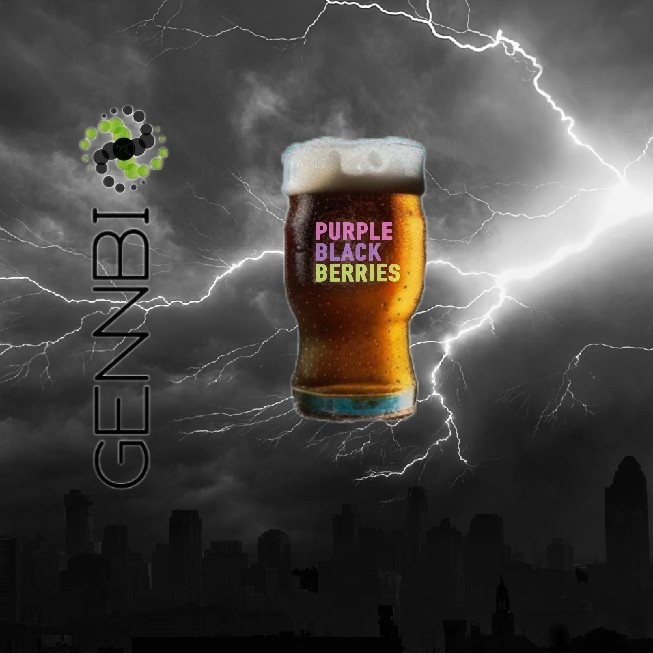

FOOD & BREWING
1. Cerveza
Cold beer 5°C.
Oatmeal stout, weizenbock, irish red, and others. Best offer for 40
bottles. 2.00 USD/bottle premium.
| Beer | ABV | IBU´s | Price |
|---|---|---|---|
| Oatmeal stout | 5.0% V | 24 IBU | 2.00 USD/bottle |
| Weizenbock | 9.0% V | 24 IBU | 2.00 USD/bottle |
| Irish red | 4.6% V | 32 IBU | 2.00 USD/bottle |
| Rye beer | 5.5% V | 25 IBU | ask for |
| Belgian tripel | 4.5% V | 35 IBU | ask for |
| Bio-fortified beer | X.X% V | XX IBU | ask for |
Oatmeal stout.
Weizenbock.
Irish red.

Purity law.
2. Mermelada de pepino dulce
Ancestral, exotic, non-traditional jam.
| Jam | Additional flavour | Size | Price |
|---|---|---|---|
| Sweet pepino | _ | Int. | 1.50 USD/jar |
| Sweet pepino | Blackberry | Int. | 2.00 USD/jar |
| Sweet pepino | Strawberry | Int. | 2.00 USD/jar |
| Sweet pepino | _ | Int. | ask for |

Sweet pepino jam.